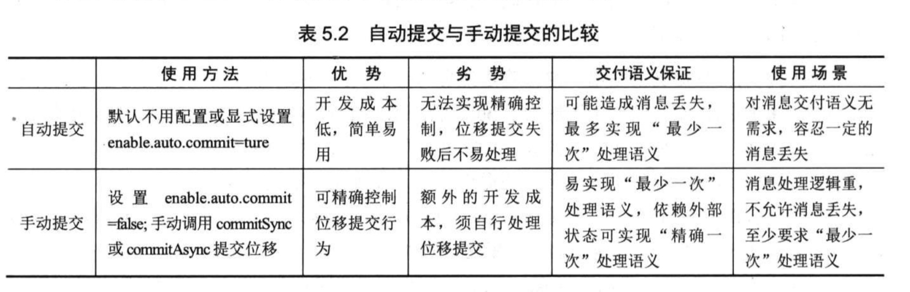

参数配置 以及默认值
Consumer 一些概念
消费者 Consumer
kafka 消费者，消费kafka队列里的消息，可以有多种语言实现， python java scala Go …,
consumer group 即是由多个独立消费者组成，消费 Topic 下的消息， 独立消费者 standalong consumer 执行独立的消费。
消费者组 Consuemer group
Kafka消费者是消费组的一部分，当多个消费者形成一个消费组来消费主题时，每个消费者会收到不同分区的消息。
consumer group可能有若干个consumer实例- 对于同一个
group而言，topic的每一条消息只能被发送到该group下的一个consumer实例上 topic消息可以发送到 订阅该topic的 多个group
kafkaConsuemr 是非线程安全的，与 kafkaProducer 是不同的。
所以无法在多线程中使用同一个 kafkaConsuemr 进行消费。
- 每个线程维护一个 kafkaonsumer
用户创建多线程消费kafka分区数据， 每个线程中创建一个单独的 kafkaConsumer 实例。
为什么要使用
Consumer Group?consumer Group是实现高伸缩性，高容错性的consumer机制，而且一旦某个consumer挂了，cosnuemr Group会立即将已经崩溃的consumer负责的分区转交给 其他consumer负责，从而保证了整个 group 可以继续工作，不丢失数据，这个过程被称为–重平衡(reblance)
消费顺序
kafka 目前只保证单个分区内的消息消费顺序，而不会维护全局的消息顺序，如果用户要实现 topic 全局的消息顺序读取，就只能通过让每个 consumer group 下只包含一个 consumer 来实现。
总结
consumer下 可以有一或者多个consumer, 一个consuemr可以是一个线程，也可以是运行在其他机器上的进程group.id唯一标志一个consumer group- 对于某个
consumer group而言，订阅topic的每个分区只能分配给订阅该consumer group下的一个consumer
offset(位移)
这里的 offset 指的是 consumer 端的位移，与分区日志中的 offset 是不同的含义
每个 consumer实例都会为它消费的分区维护属于自己的位置信息来记录当前消费了多少消息。—- offset
很多消息引擎都把消费端的 offset 保存在服务端(broker)， 这样做的好处当谈事实现简单，但可能会有如下三个问题：
- broker 变成了有状态，增加了同步成本，影响伸缩性
- 需要引入应答机制(acknowledgement)，来确认消息消费成功
- 由于需要保存很多的 consumer 的 offset故必然会引入复杂的数据结构，从而造成不必要的资源浪费
kafka consumer 端引入了 检查点机制(checkpoint), 定期对offset 持久化，从而简化了应答机制的实现
位移提交 (offset commit)
consumer 客户端需要定期向 kafka 集群汇报自己的消费进度，这一过程称为 —– 位移提交.
位移提交对于 consumer 而言非常重要,它不仅表征了 consumer 的消费进度，同时也直接决定了 consuemr 端消费语义的保证.
新版本 consumer 把位移提交到 Kafka 内部的一个 topic(__consumer_offset) 上。因此consumer 不在依赖 Zookeeper(位移提交这件事). 这就是为什么开发新版本 consumer 不需要配置 zookeeper 地址的原因。
__consumer_offset
__consumer_offset 是 kafak 一个 内部 topic,
消费者组重平衡 (Consumer group reblance)
relbance 只对 consumer group 有效。
relbance
规定了一个consumer group 下的 consuemr 如何达成一致来分配订阅 topic的所有分区。
资料
Kafka分区分配策略（1）——RangeAssignor
Kafka分区分配策略（2）——RoundRobinAssignor和StickyAssignor
构建 kafka Consumer
参考
kafka消费者Consumer参数设置及参数调优建议-kafka 商业环境实战
消息轮询
poll()
Kafka Consumer是费线程安全的！如果没有显示的同步锁保护机制，kafka 会抛出 异常。
(将同一个kafkaConsumer 实例用在了多个线程中)
kafka 的 poll() 在用户主线程中执行，，这也同时表明 消费者组执行 relbance，消息获取， coordinator 管理 异步任务结果的处理 甚至 唯一提交等操作都是运行在用户主线程中。因此仔细调优这个 poll() 相关的
kafka poll 为什么会有一个超时参数?
poll()满足以下任一个条件，即可返回
1：获取足够多的可用数据
2：等待时间超过指定的超时时间。
目的在于让Consumer主线程定期的””苏醒”去做其他事情。比如：定期的执行常规任务，（比如写日志，写库等）。
位移管理
kafka 要为每个他要读取的 分区保存消费进度，即分区当中的当前消费信息的位置 ==> 位移 offset
consumer定期向kafak 提交自己的位置信息。
offset 对于 kafka consuemr非常重要，因为他是实现消息交语义的保证(message semantic)。常见的三种消息交付语义：
- 最多一次 (at most once) 消息可能丢失,但不会重复消费
- 最少一次 (at least once) 消息可能会重复消费，但不会丢失消息 (default)
- 精确一次 (only once) 消息一定会被处理，且只会被处理一次
自动提交 与 手动提交
自动提交默认时间间隔 为 5s
自动提交减少了开发成本，但不能细粒度的控制处理位移的提交，特别是精确一次处理语义时，在这种情况下，用户可以使用手动提交位移。
通过设置 auto.commit.interval.ms 参数可以控制自动提交的时间间隔
手动提交：
参数配置： enable.auto.commit = false
然后调用 commitSync() commitAsync()

重平衡 rebalance
rebalance 分区分配策略：
- range 策略
- round-robin 策略
- sticky 策略
Kafka分区分配策略（1）——RangeAssignor
Kafka分区分配策略（2）——RoundRobinAssignor和StickyAssignor
rebalanc 监听器
新版本 consumer
默认提交 offset 到 __consumer_offsets 中，其实，Kafka 也支持用户把位移提交到外部存储中,比如数据库。如要实现这个功能，用户就必须使用 rebalance 监听器. 使用 rebalance 监听器的前提是用户使用 consumer group. 如果使用得是独立的 consumer 或是直接手动分配分区，那么 rebalance 监听器是无效的
rebalance 监听器有一个主要的接口回调类 ConsumerRebalanceListener, 里面有两个方法 onPartitionsRevoked() onPartitionAssigned().
在开启新一轮的 rebalance 之前 会调用 onPartitionsRevoked()
rebalance 完成后 会调用 onPartitionAssigned()
rebalance 监听器常见的用法就是 手动提交位移到第三方存储以及在 rebalance 前后执行一些必要的神级操作